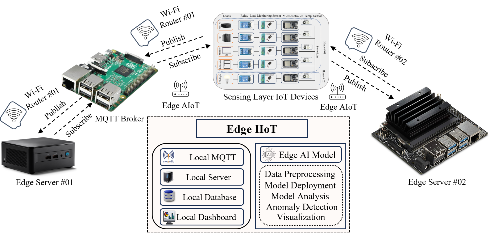

Md. Ibne Joha's research stands at the intersection of AI, edge computing, and energy systems, addressing the critical challenges of real-time performance, scalability, and security in Industrial IoT environments. His innovative integration of deep learning techniques with NILM, forecasting, anomaly detection, object tracking, and edge computing underscores his commitment to building intelligent, resource-efficient energy infrastructures. By optimizing model architectures for deployment on edge devices, he effectively bridges the gap between theoretical advancements and real-world applicability.

⚡ Energy Funded Project
One-Day Ahead Solar PV Power Generation Forecasting
Advanced AI models deployed across 10 PV sites to forecast solar power generation. Models use temperature, wind speed, humidity, cloud cover, and power aggregation features to achieve RMSE less than 8%. Government and company-funded project.

🔋 IIoT Published
AI-Driven Real-Time Load Forecasting & Anomaly Detection in Secure IIoT
Secure IIoT framework using a TCN-GRU-Attention model for real-time energy optimization. An Isolation Forest model detects anomalies achieving 95% Precision, 98% Recall, 96% F1 Score. Secured with TLS/SSL and encrypted credentials.

📲 Edge AI Review
Efficient AI for Real-time NILM in Secure Edge Computing (ARBGTU-Net-NILM)
Proposed ARBGTU-Net-NILM model enhances NILM performance with 51.27% F1-score improvement, reduces MAE by 38.28% and SAE by 89.83% vs. state-of-the-art. Designed for edge deployment with TLS/SSL security. Validated on REDD and real-world datasets.

🌍 IoT Published
AI Models for Real-Time IoT-based Environmental Monitoring & Power Forecasting
IoT platform for real-time environmental and energy data collection. A hybrid LSTM-GRU model achieves 2.2% MAE, 4.91% RMSE, and 96.06% R² for air-conditioning power forecasting, outperforming individual models.

🤖 XAI Ongoing
Explainable AI for Non-intrusive Load Monitoring & Anomaly Detection
Introduces XAI to translate load disaggregation outputs into clear appliance-level monitoring insights. Identifies unusual consumption patterns and generates human-readable explanations, building user trust in automated monitoring.

🔐 FL Ongoing
Federated Learning for Load Forecasting, Disaggregation & Anomaly Detection
Explores Federated Learning for decentralized training of AI models across distributed edge nodes, preserving data privacy and minimizing communication overhead. Enables collaborative model development without raw data transfer to central servers.

🚁 UAV Funded
Real-time Object Tracking with Adaptive Zoom & Fuzzy Logic Gimbal Control
Government-funded project combining real-time object detection and tracking with adaptive zoom and fuzzy logic gimbal control for precise alignment and stable imaging in UAV/UGV platforms. Deployed on edge hardware (Jetson Nano, LattePanda).

🔋 EV Published
AI for Battery State of Charge (SoC) Estimation
RNN-CNN-based parallel hybrid approach for accurate SoC estimation under various temperatures and discharging cycles, considering noisy real-world conditions. Enables precise EV battery management for improved safety and performance.

⚡ Smart Grid Published
IoT-Based Smart Energy Management System for Smart MicroGrid
Comprehensive IoT system integrating smart metering, real-time monitoring, automated protection, and energy management for smart microgrids. Won Best Paper Award at IEEE ICPC2T 2024.
🔧 Research Hardware & Tools
🖥️ Edge Platforms
📊 IoT Dashboards
🔨 Design Tools
🔐 Security